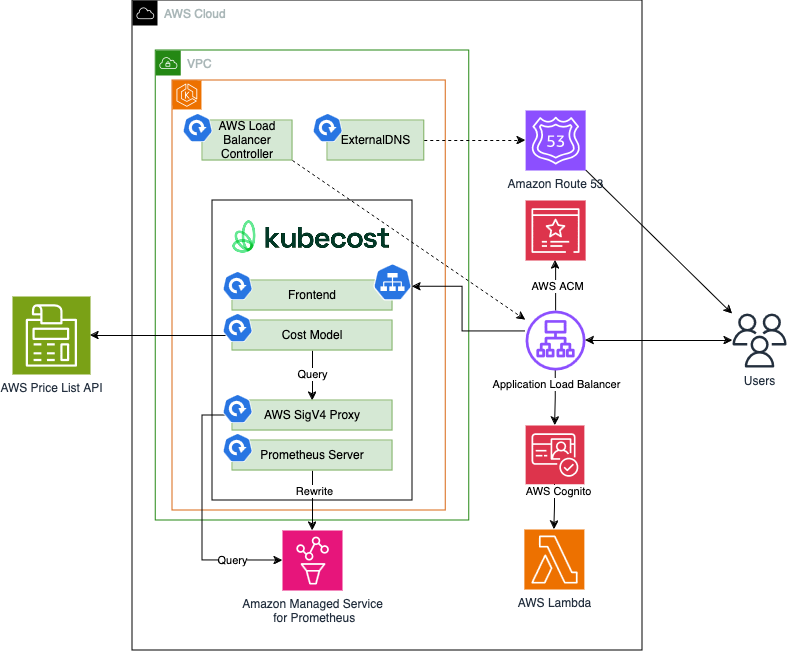
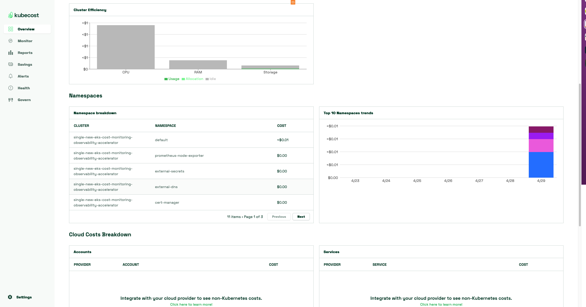
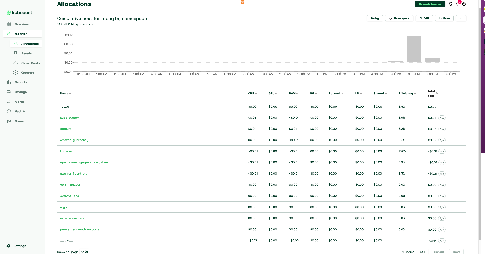

Single Cluster Observability - Kubecost Cost Monitoring with Secure Ingress using Cognito¶
Implementing Kubecost for monitoring EKS clusters provides invaluable insights into resource utilization and cost management. Kubecost offers granular visibility into the cost breakdown of Kubernetes workloads, enabling efficient allocation of resources and optimization of infrastructure spending. By integrating with Amazon Managed Prometheus (AMP) and AWS services such as Application Load Balancer, Amazon Cognito, and Amazon Route 53, Kubecost ensures a comprehensive monitoring solution with secure access control mechanisms. With alerts and recording rules provided by Amazon Managed Service for Prometheus, teams can proactively identify and address potential issues, ensuring optimal performance and cost-effectiveness of EKS deployments. Kubecost's user-friendly dashboard and reporting capabilities empower organizations to make informed decisions, maximize resource efficiency, and maintain cost predictability in their EKS environments, ultimately enhancing operational excellence and driving business growth.
Architecture¶
The following figure illustrates the architecture of the pattern we will be deploying for Single EKS cost monitoring (Kubecost) pattern with Application Load Balancer, Amazon Cognito, and a Transport Layer Security (TLS) Certificate on AWS Certificate Manager (ACM) with Amazon Route 53 hosted zone to authenticate users to Kubecost

Objective¶
- Deploys one production grade Amazon EKS cluster.
- AWS Kubecost with Amazon Managed Prometheus (AMP) integration
- Secure Ingress with AWS Cognito
- AWS Certificate Manager with Amazon Route 53 hosted zone
- Alerts and recording rules with Amazon Managed Service for Prometheus
Prerequisites:¶
An existing hosted zone in Route53 with the ability to add records.
Ensure that you have installed the following tools on your machine.
Configuring domain¶
The CDK code expects the allowed domain and subdomain names in the CDK context file (cdk.json).
Create two environment variables. The PARENT_HOSTED_ZONE variable contains the name of your Route 53 public hosted zone. The DEV_SUBZONE_NAME will be the address for your Kubecost dashboard.
When users register to cognito they will have to provide an email address, using the allowed.domains.list you can specify you enterprise's email domain to only allow your employees to sign up for the service
Generate the cdk.json file:
PARENT_HOSTED_ZONE=mycompany.a2z.com
DEV_SUBZONE_NAME=kubecost.mycompany.a2z.com
ALLOWED_DOMAIN_LIST=amazon.com
cat << EOF > cdk.json
{
"app": "npx ts-node dist/lib/common/default-main.js",
"context": {
"parent.hostedzone.name": "${PARENT_HOSTED_ZONE}",
"dev.subzone.name": "${DEV_SUBZONE_NAME}",
"allowed.domains.list": "${ALLOWED_DOMAIN_LIST}"
}
}
EOF
Deploying¶
Please follow the Deploying instructions of the New EKS Cluster Open Source Observability Accelerator pattern till step 7. At step 8, execute the following
make build
make pattern single-new-eks-cost-monitoring deploy
Verifying A record for Route53¶
Open the AWS console once the deployment is complete. Navigate to Route53 in AWS console and select the hosted zone you used for the deployment. Verify the entry of a record matching the DEV_SUBZONE_NAME we used.
Verify the resources¶
Run update-kubeconfig command. You should be able to get the command from CDK output message.
aws eks update-kubeconfig --name single-new-eks-fargate-opensource-observability-accelerator --region <your region> --role-arn arn:aws:iam::xxxxxxxxx:role/single-new-eks-fargate-op-singleneweksfargateopens-xxxxxxxx
Let’s verify the resources created by steps above.
kubectl get pods -o wide -A
Output:
NAMESPACE NAME READY STATUS RESTARTS AGE IP NODE NOMINATED NODE READINESS GATES
amazon-guardduty aws-guardduty-agent-5lblf 1/1 Running 0 3h43m 10.0.184.135 ip-10-0-184-135.us-west-2.compute.internal <none> <none>
amazon-guardduty aws-guardduty-agent-qzm4j 1/1 Running 0 3h43m 10.0.153.58 ip-10-0-153-58.us-west-2.compute.internal <none> <none>
argocd blueprints-addon-argocd-application-controller-0 1/1 Running 0 3h40m 10.0.128.187 ip-10-0-153-58.us-west-2.compute.internal <none> <none>
argocd blueprints-addon-argocd-applicationset-controller-7d77d5cdjjhm8 1/1 Running 0 3h40m 10.0.148.136 ip-10-0-153-58.us-west-2.compute.internal <none> <none>
argocd blueprints-addon-argocd-dex-server-84dc54844f-lwgss 1/1 Running 0 3h40m 10.0.178.159 ip-10-0-184-135.us-west-2.compute.internal <none> <none>
argocd blueprints-addon-argocd-notifications-controller-597477df8q4btr 1/1 Running 0 3h40m 10.0.166.196 ip-10-0-184-135.us-west-2.compute.internal <none> <none>
argocd blueprints-addon-argocd-redis-79cb6b87dc-tddlm 1/1 Running 0 3h40m 10.0.160.149 ip-10-0-184-135.us-west-2.compute.internal <none> <none>
argocd blueprints-addon-argocd-repo-server-584549c456-5gfs8 1/1 Running 0 3h40m 10.0.146.88 ip-10-0-153-58.us-west-2.compute.internal <none> <none>
argocd blueprints-addon-argocd-server-7b7b488dd4-686tx 1/1 Running 0 3h40m 10.0.175.70 ip-10-0-184-135.us-west-2.compute.internal <none> <none>
aws-for-fluent-bit blueprints-addon-aws-fluent-bit-for-cw-aws-for-fluent-bit-lr99l 1/1 Running 0 3h40m 10.0.160.194 ip-10-0-184-135.us-west-2.compute.internal <none> <none>
aws-for-fluent-bit blueprints-addon-aws-fluent-bit-for-cw-aws-for-fluent-bit-z2pm7 1/1 Running 0 3h40m 10.0.146.233 ip-10-0-153-58.us-west-2.compute.internal <none> <none>
cert-manager cert-manager-6d988558d6-wm746 1/1 Running 0 3h40m 10.0.188.100 ip-10-0-184-135.us-west-2.compute.internal <none> <none>
cert-manager cert-manager-cainjector-6976895488-mk9sw 1/1 Running 0 3h40m 10.0.173.79 ip-10-0-184-135.us-west-2.compute.internal <none> <none>
cert-manager cert-manager-webhook-fcf48cc54-92wqm 1/1 Running 0 3h40m 10.0.133.37 ip-10-0-153-58.us-west-2.compute.internal <none> <none>
default otel-collector-amp-collector-6d768bcbf5-vbmqr 1/1 Running 0 3h39m 10.0.171.253 ip-10-0-184-135.us-west-2.compute.internal <none> <none>
external-dns blueprints-addon-external-dns-78bcd6c7c5-df74q 1/1 Running 0 3h40m 10.0.180.87 ip-10-0-184-135.us-west-2.compute.internal <none> <none>
external-secrets blueprints-addon-external-secrets-675f847b97-kbn98 1/1 Running 0 3h40m 10.0.178.180 ip-10-0-184-135.us-west-2.compute.internal <none> <none>
external-secrets blueprints-addon-external-secrets-cert-controller-68cbb65dspf8c 1/1 Running 0 3h40m 10.0.154.4 ip-10-0-153-58.us-west-2.compute.internal <none> <none>
external-secrets blueprints-addon-external-secrets-webhook-6cfdbdf896-j9ng7 1/1 Running 0 3h40m 10.0.142.78 ip-10-0-153-58.us-west-2.compute.internal <none> <none>
kube-system aws-load-balancer-controller-7cd4b895d4-gvxtv 1/1 Running 0 3h40m 10.0.131.188 ip-10-0-153-58.us-west-2.compute.internal <none> <none>
kube-system aws-load-balancer-controller-7cd4b895d4-m2dh5 1/1 Running 0 3h40m 10.0.173.13 ip-10-0-184-135.us-west-2.compute.internal <none> <none>
kube-system aws-node-7l22p 2/2 Running 0 3h43m 10.0.184.135 ip-10-0-184-135.us-west-2.compute.internal <none> <none>
kube-system aws-node-rfc76 2/2 Running 0 3h43m 10.0.153.58 ip-10-0-153-58.us-west-2.compute.internal <none> <none>
kube-system blueprints-addon-metrics-server-7cb6564d98-jhwmj 1/1 Running 0 3h40m 10.0.182.218 ip-10-0-184-135.us-west-2.compute.internal <none> <none>
kube-system blueprints-addon-secret-store-csi-driver-secrets-store-csi5fbjj 3/3 Running 0 3h40m 10.0.190.108 ip-10-0-184-135.us-west-2.compute.internal <none> <none>
kube-system blueprints-addon-secret-store-csi-driver-secrets-store-csigdgfd 3/3 Running 0 3h40m 10.0.148.234 ip-10-0-153-58.us-west-2.compute.internal <none> <none>
kube-system coredns-5b8cc885bc-t9dpp 1/1 Running 0 3h47m 10.0.132.167 ip-10-0-153-58.us-west-2.compute.internal <none> <none>
kube-system coredns-5b8cc885bc-tkq6g 1/1 Running 0 3h47m 10.0.152.126 ip-10-0-153-58.us-west-2.compute.internal <none> <none>
kube-system csi-secrets-store-provider-aws-ktklg 1/1 Running 0 3h40m 10.0.190.207 ip-10-0-184-135.us-west-2.compute.internal <none> <none>
kube-system csi-secrets-store-provider-aws-qmg44 1/1 Running 0 3h40m 10.0.142.192 ip-10-0-153-58.us-west-2.compute.internal <none> <none>
kube-system ebs-csi-controller-5c4b7b9549-cvv8b 6/6 Running 0 3h40m 10.0.163.2 ip-10-0-184-135.us-west-2.compute.internal <none> <none>
kube-system ebs-csi-controller-5c4b7b9549-d9wfc 6/6 Running 0 3h40m 10.0.146.91 ip-10-0-153-58.us-west-2.compute.internal <none> <none>
kube-system ebs-csi-node-9sxtr 3/3 Running 0 3h40m 10.0.155.48 ip-10-0-153-58.us-west-2.compute.internal <none> <none>
kube-system ebs-csi-node-bcsjk 3/3 Running 0 3h40m 10.0.187.96 ip-10-0-184-135.us-west-2.compute.internal <none> <none>
kube-system kube-proxy-djbgh 1/1 Running 0 3h43m 10.0.153.58 ip-10-0-153-58.us-west-2.compute.internal <none> <none>
kube-system kube-proxy-mck62 1/1 Running 0 3h43m 10.0.184.135 ip-10-0-184-135.us-west-2.compute.internal <none> <none>
kube-system kube-state-metrics-6cf6f65cf7-nzqkb 1/1 Running 0 3h40m 10.0.186.50 ip-10-0-184-135.us-west-2.compute.internal <none> <none>
kube-system ssm-installer-fsfjn 1/1 Running 0 3h41m 10.0.189.79 ip-10-0-184-135.us-west-2.compute.internal <none> <none>
kube-system ssm-installer-vbqqm 1/1 Running 0 3h41m 10.0.154.228 ip-10-0-153-58.us-west-2.compute.internal <none> <none>
kubecost kubecost-cost-analyzer-5769d5f47f-fjwkz 3/3 Running 0 3h40m 10.0.137.248 ip-10-0-153-58.us-west-2.compute.internal <none> <none>
kubecost kubecost-cost-analyzer-prometheus-server-6f48bdc56c-d6789 2/2 Running 0 3h40m 10.0.187.76 ip-10-0-184-135.us-west-2.compute.internal <none> <none>
opentelemetry-operator-system opentelemetry-operator-98f5b9c89-7kp6x 2/2 Running 0 3h39m 10.0.148.126 ip-10-0-153-58.us-west-2.compute.internal <none> <none>
prometheus-node-exporter prometheus-node-exporter-czsx8 1/1 Running 0 3h40m 10.0.184.135 ip-10-0-184-135.us-west-2.compute.internal <none> <none>
prometheus-node-exporter prometheus-node-exporter-jg9tw 1/1 Running 0 3h40m 10.0.153.58 ip-10-0-153-58.us-west-2.compute.internal <none> <none>
Now, lets navigate to the URL described as our dev.subzone.name in the cdk.json file and signup with a new cognito user profile.
- Kubecost Dashboards

- Kubecost Namespace Dashboards

Teardown¶
You can teardown the whole CDK stack with the following command:
make pattern single-new-eks-cost-monitoring destroy